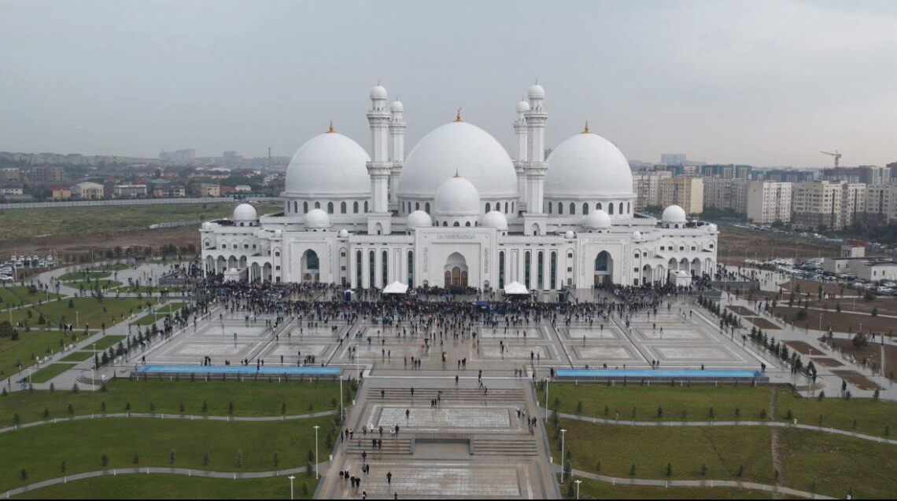
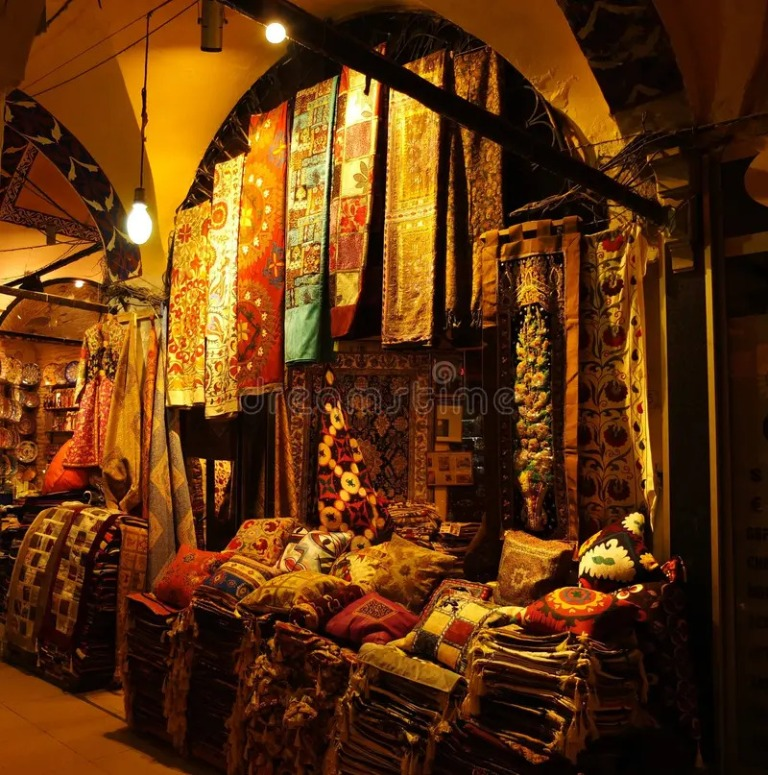
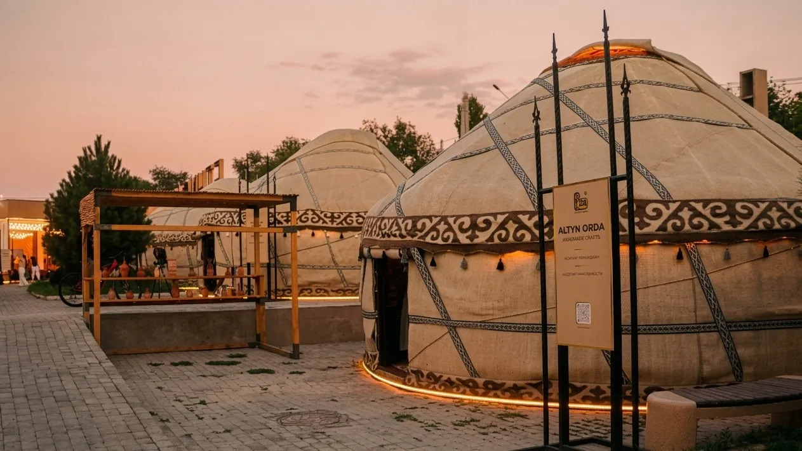

Шымкент
Тёплый юг Казахстана · восточные базары и древние маршруты
Город и его колорит

Мечеть Шымкента
Белоснежная мечеть с крупными куполами и минаретами — одна из заметных архитектурных достопримечательностей города. Просторная площадь перед ней особенно оживлённая во время праздников.

Восточный базар
Здесь можно найти яркий текстиль, ковры и изделия ручной работы. На базаре легко почувствовать живой ритм южного города.

Этноаул «Алтын Орда»
Юрты знакомят гостей с традиционным бытом и гостеприимством. Вечером огни и тёплые оттенки заката создают особую атмосферу.
🏛 История рядом
Шымкент удобно выбрать отправной точкой для поездок в древний Туркестан и к мавзолею Ходжи Ахмеда Ясави.
☀️ Тёплый юг
В городе много солнечных дней и долгий тёплый сезон — прогулки и поездки особенно приятны весной и осенью.
🎒 На заметку
Попробуйте местную кухню и оставьте время на базар: там удобно искать сезонные фрукты и южные угощения.